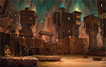
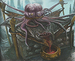

Out of the Abyss (Level 2 - ?)
Below are the sessions following our campaign based on the Out of the Abyss campaign setting.
Session33: The Surface!
The companions gather the loot from Ilvara and her minions before heading on toward Mithril Hall. At the lowest of the mines the party is blocked by a iron pipe wall and gate guarded by a score of dwarven veterans. The leader of these dwarfs allows the group to pass after some questions. The party notices several dead goblinoids around the gate.
The group then heads up through the town, over the Undercity and into the Hall of Gathering where they learn about a hotsprings called Thermistor's Pool and nearby opening to the surface. Deciding to head to the surface the group finds a shattered gate being repaired by stonemasons. Outside the air is below freezing and snow falls in powdery gusts. The sun, even through the dense clouds is nearly blinding after so long underground.
Heading back into the town and to the tavern area the group stays the night at Garumn's Folly where there is gambling, drinking, and general good-will. There Galifraen regails many of the the innfolk with tales of the parties exploits in the underdark. Onnie gets laid by Friar Zak. Shithead steals an middle-aged woman's cane and smashes it upstairs to take the golden handle off it. Francis enquires about the market and hotsprings learning both are outside of the town. And Seven-Stars is distracted. Lastly, Zodius has a big goof trying to impress an attractive halfling maiden but collapses in his chair revealing an underdark louse in his beard. He later has a mediocre dwarven style beard cut.
Session 32: Showdown with Ilvara
The party and the drow battle for 4 hectic rounds. Ilvara is badly wounded by Galifraen at the start of the combat but her comrade priestees, Asha, is able to outlast her and throws some unpleasant spells at the party, notably a swarm of biting flying spiders. Francis is in the thick of the fight as usual and takes a beating throughout the battle, while the other members of the crew take shots and cast spells at the drow. Finally the last drow falls and the group prepares to search their bodies and collect their scalps.
Session 31: Blingdenston 11
The party returns to the town's surface out of the catacombs and secures the flaming glaive reward From the king and queen. That night the town celebrates the heroic deeds of the party and Shithead get laid by "Barbara", the sister of Finkle. The next day they leave the town and head out toward Mithral Hall. Onnie says goodbye to a heartbroken Finkle and Shithead insults him. Seven-Stars tries to convince Finkle to sneak onto the caravan but Finkle is to keen on obeying Onnie to listen. One of the 4 caravan guards is Smooth Headcap, the gnome that the cat-hair toupe was made for.
The travel to Mithral hall takes one week, and the party encounters and rescues Lethywin Silvergrace, a male moon elf from the surface town of Silverymoon from a hungry ooze. Two days later the group encounters a pair of wounded orcs hiding in a cave, but decide to avoid a fight per Francis strong desire to treat the orcs fairly.
Just a day outside the dwarven city the group notices a tripline setup along the road and investiages to find Ilvara waiting in ambush. Zodius dispells the false walls the drow were hiding behind and the battle is joined.
Will the party survive another encouter with Ilvara and her minions? Will they be dragged back to Velkynevelve?
Session 30: Blingdenstone 10
The group is met by Jadger and several ghost guards and stone buddies who escort them through the dangerous ooze-filled combat zone and into the safer region of settled Blingdenstone. After a short while the king and queen meet the party and are very pleased with the results, though the wererats suffered terribly during the fight, the rest of the humanoids of Blingdenstone made out OK in the battle.
The party then decides to investigate the whereabouts of Baldini. They hear from a mute child that Baldini was seen entering the catacombs at the local church of Segoojan Earthcaller, The Ruby in the Rough. They also learn the location of Baldini's home and exploring it find a journal describing Baldini's fracturing personality and plot against Blingdenstone and the Pudding King.
At the temple outside the catacombs the party intimidates Glyphic Shroombrite, the temple's acolyte, into leading them to Baldini. The party notices Glyphic scratching at his shoulder and cut away a foul boil growing there that had a face beginning to appear on it. Glyphic then leads them down into the catacombs where Galifraen induces several of the ghost from the "traitor" section to join the group against Baldini. Axel and another deep gnome also accompany the party, as well as Jadger.
The group reaches a spookier-than-typical juncture in in the catacombs and begin hearing maddening whispers. Several of the traitor-ghosts seem particularly affected. Around the corner Baldini mutters to himself, and has sprouted a second baboon-like head. The group charges him after a debate on tactics and pillowcase strategems. Baldidni sprouts tentacles and several of the ghosts turn against the party but the fight is short and Baldini's heads are smashed and his body pierced into the floor.
Now the group prepares to return to the temple and obtain their reward (a magical glaive for Francis), as well as debark on the caravan headed to Mithril Hall. But first they want to force the remaining traitor ghost to show them where the other traitor ghost that fled is buried so they can descrate its grave...
Session 29: Blingdenstone 9
The party manages to defeat the oozes, as Onnie's wild magic continues to flare up, at one point summoning a clockwork creature with a pipeorgan built into its pyrimidal body. She also gains the abilty to teleport at will and grows to a large size.
When the group enters the puddin' Kings court they find a cavern draped with green slime in mock arrangment of court tapestries. The king screams at the adventurers in a rage as he is struck by an arrow and turns into a pudding himself.
The battle is short but treacherous, the king propelling frothy plumes of poisonous goo, nevertheless he is slain and chortles as he melts away "You haven't won! No! We will rise from our childern! We will be reborn from the faceless lord! Jubilex will consume the banquet of the Fungal Queen and we.. will... all... grow ... !"
As the puddle of ooze that was the king spreads across the floor two spellbooks bound in lizardskin can be seen. Zodius snatches them up.
The battle can still be seen seen down the passage. The oozes are no longer coordinated but still appear too numerous for the Blingdenstone locals to destroy, what will happen now?
Session 28: Blingdenstone 8
The group decides to head to see Gurnik Tapfinger and inform him of the desturction of the drow statues. Gurnik is much pleased and leaves to banish the evil cloud of malignant dust. The group then decides to rest before heading to the council of war.
At the council the party and the towns leaders agree on a strategy. The adventures will be a strike force tasked with sneaking into The Pudding King's lair and killing him while the main force of the army attacks the ooze filled chamber south of the king's court.
The party meets with Shinetail, who leads them to a quiet tunnel in the wererat district. Soon the sounds of battle can be heard and Shinetail leads the party through several passages before a giant black pudding drops down onto him, dissolving his flesh into foul acrid fog. The pudding splits into four horse sized portions and attacks the group. During the fray the group learns that slashing damage splits the pudding and lightning damage heals it, and Onnie triggers an unstable surge of magic while healing Finkle Tiptoes. The puddings are eventually destroyed and the party rushed on towards the throne area.
In another corridor the group encounters a ragged gnomish figure who commands and brain-like ooze and another black pudding to destory the party. The gnome then flees towards the court and the party attacks the oozes. Onnie accidentally teleports next to the group causing some dismay as magic around her is in dangerous flux. She then becomes confused. The brain ooze emits a psychic blast which injures several party members, causing severe nosebleeds.
The group is in a perilous position with two fearsome oozes assaulting them and Onnie's wild magic still flaring up. Will they succeed against The Pudding King... will they even make it to the throne room?
Session 27: Blingdenstone 7
While discussing possible attack strategies at the inn, the group decides to take on the drow statues for the Emerald Enclave. Doing do should release the evil elemental influence in the Rockblight area and enable the battle against the oozes to use reliable earth elemental reinforcments.
Returning to the cavern where the statues are the most of the group gets down to smashin' the drow to dust. Zodius starts things off spicy with a fireball setting the tone for the battle (statues getting whupped). Finkle pulls severl kill steals on Francis, and a bless from Shithead keeps most of the party on target. Once all the drow are destroyed Seven-Stars's pet stone elemental that he release into the wild shows up enlarged and enraged. Feeding it shiny stones works for a moment before the group bashes the elemental into 5 pieces which also attack. These are also dispatched quickly and a cloud of malevolent dust that makes everyone ornery fills the chamber. Everin considers how to chisel or otherwise recover the scalps off the destroyed drow as the group head out of the anger-inducing cavern to report the deed to Nomi Pathsutter.
The council of war is tomorrow, will the Battle for Blingdenstone be too?
Session 26: Blingdenstone 6
The group takes the writ recognizing clan Goldwhisker as part of the settling clans of Blingdenstone back to Chipgrin. The praty then ask Chipgrin about the Pudding King and learn that his lair is guarded by many oozes. Jadger reveals himself by rising out of the floor and suggests that a council of war be held to determine how to deal with the oozes. Consulting with Gurnik Tapfinger the group learns that stone elementals would make resilient allies against the oozes but that they will need to destroy the evil force that still dwells in the Rockblight district before the stone elementals will be reliable.
With this information the party heads to The Stoneheart Enclave and meet with Nomi Pathshutter. They receive 1,400 gp in exchange for the evil elemental samples they collected. Galifraen and Zodius assist in researching the samples and Seven-Stars captures a pet evil mini charcoal elemental that hatched from one of the samples. Nomi makes contact with the entity and learns that it has taken refuge in the 30 drow statues, and that destroying the statues will enable the enclave to banish it. She then provides the party with 3 anti-elemental grenades which, after being charged at the Steadfast Stone, should help in destroying the statues.
Returning the Blingdenstone the party attend the Festival of Falling Stars and discourage Sark from commiting hate crimes against the wererats who came. Seven-Stars also gives his foul toupe to Smooth Headcap, the caravan guard who wanted hair to impress his girlfriend. The festival proves moving to most of the adventures, reminding them of the night sky they took for granted before being captured months ago. Zodius has a vision of the group making it to the surface soon.
With nostalgic hearts the adventures return to the inn for rest and ale, and wait for the council of war to begin...
Session 25: Blingdenstone 5
The group decides to leave the cleansed temple and head return to the safe portion of Blingdenstone. On their way back they notice several giant spiders on the ceiling overhead, spiders which appear to have fiendish traits (scaly patches of hide). The group ignores these foes and returns to the inn where they make a deal with the innkeeper to buy the medusa head. It remains unclear if the the head is dangerous.
After several members get drunk and others retire the King and Queen of Blingdenstone summon the adventurers to their court and ask them to meet with the wererats who have requested the adventuerers as mediators for the wererats and deep gnomes. The group agree and are advised by the king to slay the rats if things go poorly. The deep gnome ghosts agree to help defend the adventurers if they are attacked during the talks.
The concern of the deep gnome king seems unfounded, the leader of the wererats Chipgrin, seems friendly and shows the party the threat of the ooze invasion, as well as describing the leader of the oozes. Baldini is also implicated as dealing with the oozes and supposedly has sprouted a second head. The group returns to the queen and king and it is agreed that the deep gnomes will ally with the wererats against the oozes.
It is unclear when the oozes will attack, and what else the party can do to prepare, will they strike first?
Session 24: Blingdenstone 4
The menacing shadows are investigated by Zodius's pet owl, Horace and are found to be a pair of wretched deep gnome wererats. There is debate over whether the group should murder them but Everin convinces the group that killing is in poor taste in this case. The party then move back through the double gate leading into the safe portion of Blingdenstone and retire to the Foaming Mug, where the innkeeper, Tappy Foamstrap, eagerly listens to their bold tale of murdering the medusa. She mentions that the party should be able to collect a reward for killing the medusa from the cynical gnome guard at the entrance to the Rockblight area, a certain Sark Axelbarrel, or "Axel" for short. The party then retire to their rooms to rest.
Arising, the group determines that they have about 24 hours left before the Festival of the Falling Star occurs, and decide that helping Gurnik Tapfinger by cleansing his church of evil elementals is the next task worth their time. Before returning to Rockblight they stop by the merchant quarter and purchase some potions from their merchant friend Kazook Pickshine. They then head back to Rockblight and, following directions given by Gurnik, they find The Steadfast Stone, a large chamber with a 30' high socketed stone monolith. They place a hallowed ruby granted to them by Gurnik into the monolith and are soon attacked by several waves of earth elementals.
The battle is long, perhaps the longest the group has face thus far. Six elementals rise up out of the very stones of the temple's walls to attack the group, Traps, Rusty, Turd, Bould, Glare and, Twitch Onnie and Everin are gravely injured several times but prompt healing from Shithead keeps them from perishing under the heavy blows of the elemental fists. As the battle drags on the magic of hallowed ruby amplified in the monolith and was channeled by Galifraen into healing allies and smiting foes. Seven-Stars pops crossbow shots for most of the battle but also nearly saves one of the friendly elementals from destruction with a bold Tai Chi move. Finally, after nearly a dozen misfires, a mythic shot from Galifraen fells one of the last two elementals. Moments later Francis destroys the last one. During the battle three smaller elementals known as "Galeb-Dur" animated near the monolith, and though one was destroyed during the battle the temple seems to have been successfully cleansed of evil.
With the elements vanquished the group nods to the solemn guardian elementals and consider resting again before deciding what to do next...
Session 23: Blingdenstone 3
 Faces of JusticeA palaver over which direction to go ends with the group deciding to explore the crystal cavern
overlooking the waterfall nearby. On the way up the stairs they are attacked by 2 gargoyles. Seven-Stars
hides behind a boulder which turns into an earth elemental shortly thereafter. Zodius blasts the two
gargoyles out of the sky with his first fireball and Francis makes a brave show of riding the back
of the elemental and stabbing it with his recently acquired glaive.
Faces of JusticeA palaver over which direction to go ends with the group deciding to explore the crystal cavern
overlooking the waterfall nearby. On the way up the stairs they are attacked by 2 gargoyles. Seven-Stars
hides behind a boulder which turns into an earth elemental shortly thereafter. Zodius blasts the two
gargoyles out of the sky with his first fireball and Francis makes a brave show of riding the back
of the elemental and stabbing it with his recently acquired glaive.
After dispatching the elemental the party continues up into the crystal overlook and find little of value, though Galifraen deduces that the area seems the most likely location of the Festival of the Falling stars that occurs in two days time.
The group continues on into the northen portion of Rockblight, and discover a central chamber with 4 passages leading out. Seven-Stars observes the finely preserved statue of a deep gnome holding a crystal, as if to shield it's eyes. The gnome is dressed in a warrior's garb and is possibly the gnome that Jadger is seeking. After determining that the gnome appears to be cringing away from one of the passages the group decides to enter the passage opposite the ominous one.
Inside the "safer" passage the troupe encounter 30 statues of drow warriors which begin to animate and slowly pursue the adventurers back up the stairs. The group flees back to the central chamber and is relieved to find that the statues only went so far as the stairs in their pursuit. Holding another council, and learning of a finely decorated chamber at the end of the ominous passage, the crew opts to risk death and bust in on whatever lies beyond the door. Several stone rodents near the entrance to the chamber suggest to the group that some sort of petrification may be chanced when fighting whatever the monster is.
Onnie and Galifraen charge into the chamber and surpise a drow matron with white snakes instead of hair. Zodius strongly suggests she close her eyes while Seven-Stars, Shithead, and Everin rush up and bind her with bedding and rope. The group then proceeds to shank her over 15 times in 12 seconds (thats over 1 shank per second) before her ruined body lies dead upon the ground.
This noble deed accomplished, the party congradulate themselves by looting her home, finding 3 valuable drow formal dresses, as well as a pair of deep gnomish spell gems. After a brief conferance over the medusa-drow's corpse, the adventurers decide to return to the safe portion of Blingdenstone to rest and try and slang the medusa head, which they promptly cut off (careful to leave it wrapped in a bag). On their way out of Rockblight, they spot two small humanoid shapes hiding in the shadows.
Are the shadows powerful foes or innocent friends? Has Blingdenstone been attacked while the party was away? And how much gold will the medusa head fetch? Hopefully the adventurers will live to find out...
Session 22: Blingdenstone 2
Entering the catacombs the group meets with Jadger, a ghostly deep gnome who asks the group to help eliminate a dangerous ghost in the Residential Quarter as well as recover the bones of his lost comrade in arms. He also accepts Pelek's remains appreciatively. Many ghosts appear during the interaction with Jadger but are indifferent or friendly with the adventurers. The group also learns of an evil force that turns the tamed earth elementals the deep gnomes use as guards and companions into chaotic murderous brutes. This information interests the group so they set out looking for more information. Zodius also observes that the temple is lacking a statue and that it is dedicated to Segojan Earthcaller, the gnomish god of deep earth, nature, and the dead.
The group leaves the catacombs looking for a guard to ask questions of, they find one immediately, praying at the temple's altar. The guard, Finkle Tiptoes, is at first angered at the groups request for information about the Stoneheart Enclave, but he warms to Onnie and agrees to lead the group to the Enclave's holy summoning chamber, Stoneheart Quarry an hour outside the town. At the quarry the group meet Nomi Pathshutter, a deep gnome mage who relates who studies of the evil influence to the group and raps with Zodius about the problem using the latest arcane terminology. From this chat the group learns that the influence is believed to be "elemental from a theoretical plane of evil" or a "evil elemental", Nomi is unsure of which. She shows the group several charcoal colored rocks and offers the group 10 gp per "unit potency" for similar rocks they should find on the insane elementals in the Rockblight area.
The party returns to Blingdenstone and are invited by a server to an inn that has opened in town in their honor. They head to the residential quarter. They meet Tappy Foamstrap, the proprietor, who asks them all manner of questions and feeds them a hearty meal of traditional surface dweller food! The group is inspired to have this taste of home after months of insects and fungi in the Underdark. Most of the group has some booze, the famous Darkstout Ale from Gracklestugh, the brewery for which the party had seen during their stay in the duergar city. Buzzed and well fed the party heads to the Rockblight area.
Onnie convinces Finkle to accompany the group into the dangerous area. A cynical deep gnome guard insults Finkle and the group before opening one of the two magical doors that form the barrier between the settled portion of Blingdenstone and the Rockblight. Inside the Rockblight the group finds cold, draughty halls strewn with debris and dust. Soon they are attacked by a ghost which creates a horrible vision of the sack of Blingdenstone, aging Onnie, Galifraen, and Zodious 20 to 30 years. Although Zodius and Galifraen are not particularly concerned, Onnie is upset at missing her 20s by the curse and the group decides to try to find a cure. Little Shithead prays for guidance and learns that a powerful divine spell will be needed to reverse the effects, and that after 24 hours the effects will be permanent.
Back in Blingdenstone proper the group meets the head priest of Callarduran Smoothhands, Gurnik Tapfinger, who was already cross with the party for being outsiders. He agrees to help them, but they must cleanse his former temple in the Rockblight area by placing a magical ruby in the "Steadfast Stone" of the temple's central chamber. He warns that insane elementals of the area will be drawn to destroy the ruby once it is placed, and the party must defend it against them until the hallowing is complete. He then explains that he will need a ruby for each aging to be reversed, and the group sets out looking for rubies.
They investigate the home of a unpleasant ghost, Vahn, and Everin finds and snatches a jewelry box from the under the bed while the rest of the group mashes on the ghost. Enraged, the ghost attacks Everin but fails to hit him, and is slain, it's spirit retreating into the box. The group opens the box in the presence of the meditating Gurnik to find 8 small rubies, and Onnie learns that one of them is cursed in some way. Francis picks up the cursed gem "so no one else will have to bear it", and seems to resist the gem's influence. Gurnik rises from his prayers and uses three of the gems to restore the aged adventueres their stolen years. He warns them that they will need to keep the ruby that cured them (now a simple stone), on their person for a years time or they risk aging again.
The party returns to the Rockblight, is again insulted by the cynical gnome, but are unafraid of the ghost or it's disturbing scene of slaughter this time.
The party has a magical ruby they need to place in an desecrated temple, and has heard rumors of some evil thing lurking in the darkness...
Session 21: Blingdenstone 1
The group proceeded on their way toward Blingdenstone, and learn from Baldini about the town. After a gruff interview through an impressively constructed magical door, the group is granted access to the town. Inside they are greeted by the king and queen of Blingdenstone, but before conversing several gelatinous cubes attacked from the ceiling. A few deep gnomes were slain during the melee but the group made out fine.
The king and queen then explained the recent increase in ooze attacks on their town, with the oozes frequenting the northeastern portion of the town's ruins. The party agreed to investigate in exchange for guidance on reaching the surface world. Before investigating the ooze infested area the group decided to speak with Kazook Pickshine, a deep gnome merchant and alchemist. From him they learn that they can escort a shipment of goods to the dwarven citadel of Mithral Hall, and in this way reach the surface. The group also met with a deep gnome ghost who called itself Jadger and asked them to lay Pelek's bones to rest in the catacombs within the towns temple.
The party now prepares to enter the catacombs, guided by the temple's acting abbot, Glyphic Shroomlight. What dangers await the party in the halls of the dead?
Session 20: Journey Toward Blingdenstone
On the way to Blingdenstone the party met a deep gnome who calls himself Matzo, and traded a piece of broken glass for help scaling a ledge. The group then encountered a swarm of 14 fire beetles and mercilessly murdered them all. After that the group braved a narrow ledge with several of them falling down into the pit below. That evening they encountered another deep gnome, Baldini Tentscarp, who offered to lead them to Blingdenstone. Two days after Baldini joined Galifraen caught him attempting to steal an elven necklace and accidental shot Baldini with an arrow in an attempt to bloodlessly discourage the theif. Later still the group found another swarm of fire beetles, and used some stinky ingredients from Zodius pack to disperse them. On the fifthteenth day some unfortunate adventureres stumbled into a patch of deathly cold mold, and suffered severe chills. Only a day out of Blingdenstone the group fought a group of ferocious gnolls hunting some sort of tortoise shelled clawed beasts. The battle proved fairly difficult for the group and Zodious' bear was slain in the melee.
Almost to Blingdenstone, and perhaps even the surface, the party prepares for the next leg of their adventure.
Session 19: Neverlight Grove 3
During the respite after the fight with Yestabrod several members of the party became agitated. Zodius became paralyzed from the neck down, Galifraen began speaking to an associate, "Tyler", that no one else could perceive... except for Seven-Stars who began to behave much like Galifraen. Little Shithead was also afflicted with some strange disorder and became uncharacteristically frightened.
In the midst of the groups confusion a troupe of 18 myconids arrived in the garden and began performing a wedding rehersal, three of them posturing the dead body of Yestabrod as a priest. Zodius had recovered from his paralysis and asked some questions of the actors but was hushed. Most of the party watched the ceremony and were favored with a disturbing vision of a leathery fungal woman, 13' tall, being tended by several bridesmaids. This vision caused further trouble in the minds of Galifraen and Seven-Stars with Galifraen running breifly toward the rehersal group before collapsing in a dialated-eyed heap. Seven-Stars began to perform somersaults and various acrobatic feats. As the rehersal party faded into the mists they began singing the same song they had been earlier:
From rocky bed the roadstool rose,
From chaos dark, he love She shows.
Wish! Yearn! Laugh!
Crave! Hunger! Dance!
Her joyous spores will spread!
You is gone, beauty rots,
Araumycos and Zuggtmoy!
Joined together, heart to heart,
Becoming one, 'til death do part!
Hail! Hail! Hail!
The party debated on heading further into the madness inducing mists, towards the mushroom tower, but decided againt it in favor of meeting with Basidia and resting. They left the garden without issue but found that most of the myconids were communing. One of the myconids, a being named Morelo, was able to provide the group with, as Everin requested, a "fine place to rest". Everin also managed to find a nice looking stick during his watch.
After the rest the group headed down to the court of the myconid sovereigns and were welcomed heartily by Phylo, who insisted they not spoil the surprise of the Garden of Welcome to anyone who had not yet visited. Galifraen and Seven-Stars decided to stay and entertain Phylo while the rest of the group met with Basidia.
Basidia communed with the party and found the visions they had most disturbing, it decided to lead the myconids who were still free of the corruption away from the grove and to endow Stool with the memories of a deep gnome explorer so the group could travel to Blingdenstone. Meanwhile Seven-Stars was putting on a world-class circus act, which so impressed Phylo that he was rewarded with a fine blue sapphire. Seven-Stars received another fine stone from Shithead who was launching them from a slingshot, hoping to silence the incessant clown music. Finally Basidia rewarded the group with a fine silver box containing 3 amethysts, 4 small diamonds, and 1 large diamond.
The group left the grove before Basidia told Phylo its plans to leave so they do not know what happened. Fancis grumbled about not fighting the demon queen as the group started out on their 16 day journey to Blingdenstone. Seven-Stars, Galifraen, and Everin were still acting strangely despite having rested and eaten well. The group also collected 50 days of food and water from the grove and stored it their Bag of Holding before setting out.
At the end of the first day's march Shithead and Francis heard a web-covered goblin stumbled past the groups resting spot. Shithead watched as 6 giant spiders scuttled after the goblin and Francis revealed his hate/fear of spiders. Early on the next day the group walked into the lair of those same spiders and set it ablaze, killing 7 of the creatures in the process, though Oni was badly wounded.
The webs are burned away and another 15 days march is ahead of the group... will they make it to Blingdenstone in one piece?
Session 18: Neverlight Grove 2
After a day enjoying the exotic dreamlike beauty of the Neverlight Grove the party ventured into the the uppermost terrace of the cavern to the "Garden of Welcome". Perceiving a possible threat of posionous gas the group masked up with the respirators obtained in Graklstugh
Reaching the top of the terrace the group observed a disturbing courtyard flanked with twisted mushrooms and golden lichen. Murmuring sounds coming from several indistinct shapes revealed themselves to be the decomposing heads of several humanoid creatures, the bodies of the creatures absorbed into the spongy floor.
Everin spoke briefly with one of the heads, a drow, who begged for death, a wish Everin is always happy to grant. The drow melted away into the floor as a mutated myconid-larvae abberation made its entrance and taunted the characters before attacking.
The battle was short but perilous with the group surrounded by corpse-like creatures raised up from the fungal floor. The garden light darkened to a grisly purple-black and several corpses exploded on the group, hurting some members in the acidic gore. Clouds of spores emitted by the larvae-myconid were blown over the group but the masks seemed to provide good protection, except from some of the spores... which seemed to fluxuate between solid and incorporeal.
A fatal blow was dealt to the larvae-myconid, but not before it caused Sarith's head to detonate in a mass of acidic spores. Searching the garden for treasure revealed several fine pieces of drow equiment.
Beyond the garden the group can see the massive mushroom tower of Yggmorgus, swathed in sickly pink clouds. Murmuring, singing and vague shapes are percieved in the thick fog.
Session 17: Neverlight Grove 1
Leaving Gracklstugh with their entourage of 10 stoneguards the group begins their 12 day journey to Neverlight Grove. The first several days of travel occur across the dreaded Blacklake, but are uneventful thanks to the masterful navigation of the duergar merchant's captain with whom the group travels. On the fourth day of sailing the group was landed on the northwest shore of the lake and parted ways with the merchant. Stool also tells the party about its home in detail.
Four days away from the grove fungal growth along the passageways became increasingly common. A large fly-like monster with a horses mane attacked the group in one of the larger caverns and slew a duergar before being put down. The bear-servant demon was very upset about the groups killing of it's beautiful comrade and was particulary orney with Zodius over the next few hours. After the duergar burried their dead and learned about high-fiving from Shithead the group moved on.
One day out from the grove a pair of sentient fungi (myconids) intercepted the group and took over for the duergar as navigators. Zodius and Seven-Stars performed some mediocre magicry to hype Stool's return to the grove.
The first view of the grove was breathtaking, a colorful vista of mushrooms, molds, pools and mist. After a brief audience with the two rulers of the grove the group some samples of surface cuisine grown from fruit-like sacks. During this experience one of the cheif myconids, Basidia, meets with the group to explain that something is amiss with it's co-sovering, Phylo, who has been behaving erratically. Basidia explains that Phylo has began introducing ideas to the colony that are fracturing their unity and has been promising a wondrous furture with the "seed mother". Basidia asks the group to accept the invitation to The Garden of Welcome from Phylo. Basidia also noticed that Sarith appear to be host to some alien spores, not seeded from any colony native to the Underdark. Sarith is defensive but recalls that he may have picked up the spores when a supply caravan he was in was attacked by myconids and when he came to he was being imprisoned for killing his fellow caravan guards. Finally Basidia notes that a band of drow visted the grove a few days ago and should be around somewhere.
The group agrees to help Basidia, but will the Garden of Welcome be less pleasant than it sounds...
Session 16: Gracklstugh 7
Bursting into the cultist chamber the group began slaughtering the innocent derro, starting with Galifraen sniping one of them in the head. Oni then attempted to eat 3 ounces of mushrooms and double her stature but the last ounce made her violently ill. A two-headed giant tried to protect its derro friends from the bloodthirsty adventureres but was charmed into attacking them instead by a sinister suggesion from Zodius. The last surviving derro tried to become invisible to give itself a chance but Zodius made his eyes magic so he could see invisible creatures, foiling the derro's plan.
Everin had been charging up until this point and unleashed his wrath on the giant and slaying a death hound that had been attacking him for some time. Onnie chopped off one of the hound's heads, then split it's leg in two in a frenzied search for 5 (or less) pound hunk of hound. She then launched this dog leg and magically accelerated it into the giant's body, killing the giant.
The semi-invisible derro flew around the ceiling hoping to somehow stop the barbarity of the invaders but was repeatedly burned by Zodius' fire. Seven-Stars was uncertain if the battle was over. suddenly the last derro plummeted head-first toward the statue the cult had been focusing on but was struck by Everin, Zodius, and Galifraen and crumpled, dead, upon the floor. The group then ransacked the cultist's home and stealing some gold, silver, and crossbows. A book containing two rituals, one for enslaving lesser animals, and another for causing a creature to sprout a second head and go mad was also recovered and translated by Zodius. With these items and nothing left to kill the party returned towards the exit of the Whorlstone Tunnels.
Before leaving Everin decided to murder the father-of-three derro that had been tied to the post and who had only recently had his hand sliced off by Seven-Stars. This accomplished Seven-Stars inisited on trying out the ritual on the cave bear that was spared when the group last past this way. After some inept animal handling the bear was positioned into the ritual center and after several hours and some psychic bullying by Zodius the bear'r mind was replaced with that of a resentful demon, "loyal" to Zodius. Just outside the exit of the tunnels Everin learned from Pelek, the deep-gnome ghost, that the hand the group recovered is indeed his, but that to lay his ghost to rest the group will need to take all his remains to Blingdenstone, where his relatives will surely be thankful for his return. Everin grudgingly agreed to possibly take the remains all the way, and collected them.
Back out of the tunnels Everin and the group make an intimidating entrance, and proceed through the derro quarter without issue, eventually arriving at the office of Errde who is impressed with the groups massacre of the cultists and provides them with an escort of 10 stone guards on their way to Neverlight Grove.
The group prepares to finally leave Graklstugh, perhaps never to return. What awaits them in Neverlight Grove?
Session 15: Gracklstugh 6
The group continues their investigation of the Whorlstone Tunnels. The first cave of interest they encounter is glimpsed beyond the bars of a large iron gate. Talented Shithead picked the lock and skulked into the chamber where several albino cave bears were locked in poorly constructed scrap metal cages. One derro spoke animatedly to one of several stone obelisks in the chamber and another derro spoke to the air about cleaning his tent for the master.
The rest of the crew snuck in and surpised the two derro, ordering them to "Freeze". The derro obeyed but the cave bears went beserk and seemed likely to burst from their cages which precipitated a fight. Seven-Stars and Everin were wouned by the vicious bears but the group still mopped up. One derro remained alive and was interrogated by the group.
The derro was hesitent to speak but Seven-Stars loosened his tongue by loosing his hand from his body. He explained that he was a trainer of the bears in the cave and that the obelisks were used to help enchant the bear-minds during training. He told the group about the passage in the south of the room that lead to the master's quarters and begged for his life, adding that he has a wife and children. The group decided to spare him.
Traveling down the narrow passage described by the bear trainer the group encountered and slew several infernal imp-like creatures who served as familiars to the master and his acolytes. After this the group crept further along the fissure and into a dense fungal jungle looking onto a chamber where a derro magic-user and several lesser derro gathered and chanted around a stone humanoid sculpture. With each verse of their chant the sculpture changed slightly, slowly sprouting a second head. Galifraen noticed a large pair of feet belonging to a giant of some kind at the rear of the chamber, behind the ritual circle.
The group prepares to attack the cultists... will they be able to stop them?
Session 14: Gracklstugh 5
Exploring more of the tunnels the party encounters a party of stinky, chimp-like demons and murder them all. An invisible demon the size of a cat attempts to sneak away but is likewise murdered by Everin. The tunnels become somewhat monotonous as the group explores wide stretches of empty passages.
Passing through a door the group happens upon a derro gaurding a heap of bodies, some of them animated undead. Shithead sneaks up and kills the guard before the rest of the group begin slaying the zombies. Onnie hates the zombies and leaps into their pit, followed by Everin and Francis. The zombies are feeble and the group quickly kills them. Everin recovers the ring and hand of the ghost from session 13.
Session 13: Gracklstugh 4
The group took Droki to Overlake Hold and turned him over to Errde for interrogation. The following day the group returned to learn that an area known as the Whorlstone Tunnels is home to Droki's clients. Errde asked the group to investigate the tunnels... after some discussion, debate, argument, and voting the group decided to head to the tunnels.
Finding the tunnels was awkward as the group was led by a characteristically unpleasant duergar who took the group through the West Cleft District again and into a narrow cleft in one of the District's walls. After a bleak trek through the passage the group found themselves in a luminous misty cavern. The stone in the cavern is warped by magical mists which create spiral patterns on most of the natural surfaces in caverns. This must be the Whorlstone Tunnels. Having reached them the group released their guide and continued further in.
Exploring with Zodius' owl familiar, the party discovers a bloated carrion feeding maggot and quickly dispatch it. A ghost appears and asks for help finding its lost hand, which had a black ring on it. The group continues further on and finds a chamber in which sounds from all across Gracklstugh can be heard.
Session 12: Gracklstugh 3
The group took Droki down into their rooms at the Ghrohrborns Lair for interrogation. Onnie lays down some intimidating words and Droki tells the group about his important but vague obligations, though he specifically mentions a sect of Derro under the leadership someone named Narrak, and that this group were the clients who the nail clippings he possesed were for. The group decides to take Droki to Errde Blackskull at Overlake Hold.
Errde is pleased with the groups perormance and is impressed enough to not only offer them 350 gp each in goods from the Stone Guard armory, but also to provide them with a guide out of Gracklstugh when they leave. The group then collects some gear from the armory and decides to wait for the results of Droki's interrogation before deciding on what to do next.
The gear included in Droki's sack includes:
Droki's Sack
- 10 sp
- spell scroll of detect invisibilty
- 2 speckled red potions of healing
- assorted dead ants, spiders, centipedes
- lizard skin parchment
- lump of black metal
- a scroll in a copper tube and four small pouches containing very dense toe nail clippings, each pouch is tagged with a different name: Falkh, Hundar, Korlgar, Dorhun
Session 11: Gracklstugh 2
The group equipped Evernin then moved into the West Cleft District to find Droki. They met with some grey dwarf guards near the gates of the West Cleft and learned of some abandoned watchposts that overlook the entrance to the West Cleft. After following one of the grey dwarves to the passage leading to the lookout posts the group considered several plans of apprehending Droki, settling on having some members above on the lookout platforms and others on ground level.
Droki does indeed pass and the group follows him into the West Cleft District, witnessing the madness of the derro swarming therein. Droki does not notice the group and Everin is able to snatch him. The group quickly leaves the derro slum and return to the inn, with a spirited debate of what to do with Droki's hat arrising between Shithead and Zodius.
What information, if any, will Droki provide to the party? Will this be enough for them to leave Gracklstugh?
Session 10: Gracklstugh 1
 Gracklstugh As the party draws closer to Gracklstugh two monstrous mermen rise out of the water and attack the boat, attempting to capsize it. The heroic efforts of Francis are able to stabilize the boat and Galifraen manages to leap onto one of the brutes and deal a killing blow, causing the other to flee. After this brief upset the group approaches one of the shabbier docks of Gracklstugh.
The first impressions of the city are unfavorable, though the sanctuary it offers from the desolate blackness of the surrounding Underdark lends it some charm. The city is a bleak expanse of monolithic stone buildings, most of which are dedicated to industry. The city is bustling, mostly with duergar, but many other Underdark races are present as well mostly drow and orcs. There is also a large community of marginalized derro. Outsiders are restricted from traveling beyond the gated Darklake District of the city.
Hemeth shows the party to the city's only inn that accepts outsiders as guests, The Gholbrorn's Lair. The "Lair" is an complex of damp passages under the cities streets and apparently floods in spring. Hemeth pays for the groups room and board for one week and offers to act as trader in the the the citie's trading plaza, known as the Blade Bazaar. After an unusual meal the group retires to their rooms, some scrambling to obtain a private room for the night.
The following morning the group ventures out of their rooms and has another strange meal, they overhear some nearby patrons complaining about the increasingly dangerous trade routes and others complaining about the price of goods. Galifraen approaches one of the patrons and offers to sell the Kua-Toan boat the group stole but the trader baulks, citing the danger of sea trade. Shortly after Hemeth enters and the group leaves to trade.
The Blade Bazaar offers a complete catalog of mundane goods amongst the permanent stalls of it's many vendors. While here the group manages to sell their boat for 700 gp, and uses the proceeds to outfit themselves more appropriately. Apart of arms and armor several memebers of the group opt for more opulent clothing, with Seven-Stars purchasing a fine cloak and brooch.
Much of the day is spent trading, and while negotiating the purchase of a map of the Underdark, a beserk, two-headed, grey-skinned giant crashes into the bazaar and begins attacking everything around it. Despite its size and strength the party is able to slay the mad giant, although Seven-Stars suffers a haymaker to the face, knocking him unconcious. In the aftermath several duergar guards confer and another stone giant, named Dorhun arrives and is distraught at his associates death. After a brief exchange with the party he takes offense at a remark of Shithead's and leaves carrying the slain giant. The duergar guards converge on the group and escort them to a nearby official building for their statements. Seven-Stars also manages to find some prime fishguts and to dump them on Galifraen but is disappointed that this fails to turn Galifraen into cool Galifraen.The building the group is taken to is an impressive stalagmite-bastion overlooking the Darklake. They are deposited into a spartan office before an official duergar named Errde Blackskull arrives and asks them about what happened. The group explains that the giant attacked unprovoked and slew a duergar right in front of them before they engaged with it. Errde accepts this, then asks the characters to help her. She suspects a conspiracy among the leaders of the derro, known as the "Council of Savants", that may involve some of the deurgar clan leaders (lairds) as well. A derro known as Droki is known to have illicit dealings with the savants but he has avoided capture or even pursuit from her guards. She hopes that the adventures might have better luck as outsiders in tailing Droki. All she knows is that he lives in the West Cleft District and frequents the Blade Bazaar. She believes that the conspiracy is somehow corrupting the minds of many of the duergar in the city and will reward evidence of corruption with gear from the duergar military's armory. She concludes by darkly mentioning that the adventurers should not attempt to leave the city without attending to Droki, implying that her "offer" is more of an ultimatum. Finally she gives each member of the party iron insignia bearing the mark of the Stone Gaurds (the military elite of Gracklstugh), which she says will grant them passage beyond the Darklake District.
The group decides to rest before heading to the West Cleft District and searching for Droki. During the evening several of them pass disguting black balls of tar-like flem and decide to purchase masks in the morning. While the rest of the group retires Shithead sets his heart on an orcish woman in the inn's common area but is attacked by a duergar slaver and decides to flee to the saftey of his room.
The following morning Sareth is too sick to leave bed, and Onnie demonstrates her deities favor by healing him of his coughing though the boils on his face continue to spread. The group travels to the Blaze Bazaar and heads to area dominated by derro traders and buyers. Although coldy received the party asks about hiring Droki through a contact named Ylsa, but when asked about Droki Ylsa claims ignorance, even when presented with evidence that she does indeed know him. Disappointed in the lack of help, the group decides to head to the West Cleft District and look for Droki there and as they leave a wretched derro begs Shithead for "summin ta' eat". It's request granted, the derro mutters that Droki wears a "floppy hat", before scurrying away into the bazaar.
Resuming their walk towards the West Cleft District, the group passes through one of the gates that border the Darklake District, and learn from the guards that Droki is a devious bastard. One of the guards also mentions abandoned guard towers that look into the the West Cleft District and might provide a good vantage for watching the derro that come and go.
Beyond the gate of the Darklake the party find themselves in an even more bleak part of Gracklstugh, with even more forges and fumes than the Darklake District. They now make their way towards Laduguer's Furrow, a great chasm in which many of the duergar live, the edges of which make up the east and west cleft districts.
Session 9: Leemoogoogoon
The frog-folk that approached last session indeed turn out to be friendly! They are lead by Plooploopeen, a frog-folk archpriest of a deity he refers to as "The Sea Mother". A slightly confused Saren translates for group as Ploop explains to the group about his troubled village. Apparently his daughter has had visions which inspired her to oppose her father with the worship of a deity known as "The Deep Father". Ploop asked the group to accompany him back to the village as false prisoners, which he would offer to his daughter as sacrifices. Then he would attempt to kill her and her followers, with the help of the party. The group decided to accept in exchange for a guided passage across the Darklake and towards Neverlight Grove.
Following the priest and his guards, the group is led into a vast cavern whose cheif feature is an immense lake. After trekking out onto an isthmus cutting across the lake and traveling for about an hour the group finally arrives at the entrance to Sloobludop. Zodius moves towards the lake's edge to fish but is dissuaded by the frog-folk who warn he may get pulled in.
The village is built across a portion of the isthmus and is protected by land with walls composed of tangled netting and hooks. Ploop escorts the party to his faction's area in the squalid village, with an unpleasant stature of a humanoid female carved of wood with a genuine crawfish head and claws strapped to it's figure with fishgut. Piled about its base are "offerings" mostly rotting marine life. Inside his hut Ploop explains that he is going to parley with his daughter and offer you as sacrifices - he expects to return shortly. A heap of wealth temps Seven-Stars to theivery but the rope leashing him to the rest of the party stays his paws. Ploop returns with the good news - you are to be sacrified!
Ploop and the group are escorted under guard to the "Altar of the Deep Father" where the opposing priest is preparing for the sacrifice.  Altar of the Deep Father Three unconscious captives were dragged in front of the altar and roused. A human, a duergar, and a halfing - or possibly goblin. Then the arhcpriestess orders her guards to prod the party towards these captives, she then utters a short prayer to the Deep Father.
Just before she signals for the sacrifice to begin, her father attacks her with his scepter - stunning her with the blow and signaling the party to strike! A few seconds of chaotic battle ensue before the priestess is slain with a blow to the head. Unfortunately the gore from her death christens the altar evoking an ominous roiling in the water of the lake. A terrible foe then bursts from the depths - a tentacle armed monstrosity with two baboon -like heads lumbers towards the village causing most of the surviving frog-folk to panic, pray, or flee.
Witnessing such a horror manifested overcomes some of the adventures. Seven-Stars begins miming as though he were eating food. Shithead falls unconcious Galifraen takes the chance splattering of fishgut across his eyes as an act of providence, becoming much endeared to said fishguts. Feeling confident Galifraen aims a shot at the massive creature hulking toward the village but somehow misses. This decides most of the party is a clear indication that it is time to flee. The frog-folk are too scattered and panicked to offer any resistance to the group stealing a large Kuo-Toan keelboat. The three captives who were to be sacrificed also manage to join the group although Seven-Stars is nearly left behind to perish. As the group rows the alien craft away from the carnage a inadvertant tentacle lash from Leemoogoogoon knocks Stool overboard - but it is promptly rescued. Tragically the group realizes too that the Moa vanished during the conflict, and likely died in the frog-folk village.
Shortly after their escape the party gets aquainted with their new companions. Francis is a young adult human male with a warriors background - though he says little about himself, Shithead is an ugly halfing, or plain-looking goblin, and Helmeth is a severe duergar with shifty eyes. After a brief discussion the group decides to travel to Gracklstugh, where they hope to finally aquire some equipment worth of their talents.
Crossing the Darklake
With Gracklstugh as a destination the group starts rowing with gusto, breaking themselves into three shifts of 2 rowers + a navigator. This means the oars are operated continously and cuts the journey of 10 days down to just 3! The group soon learns that the less time spent on the water, the better...
Only a few hours into the first day a levitating 70 lb brain featuring a beak the size of an arm and stinging tenctacles decends silently down onto the boat and attempts to make a meal of Galifraen. Failing in this the brain goes for Zodius and pulls him up and into the darkness above the sailing craft. Galifraen harpoons the beast with a rope-tethered crossbow bolt while most of the party is forced to watch - having no way to attack a creature so far away. Zodious teleports away and Galifraen sends another bolt into the creature - killing it. Francis steers the vessel under the gently falling corpse and a bounty of meat is secured. Oni assures everyone that she can purify fouled food and drink and so the group has enough to sustain them for the journey!
The next two days are fraught with danger, with the first shift of rowers suffering the most. Several sentient manta ray attack the hull of the boat but give up a short time later. A voice calls out for help while some of the taller members of the party knock their heads against a low overhang - Helmeth believes the voice to be that of one of the hags local to the Darklake area. A swarm of leathery mosquito like monsters buzz angrily about the parties heads during a rockfall - but soon pass on to a new home. Perhaps most notably, four frog-folk happen within sight of the party and are pursued and subjected to a cruel confiscation of most of their meagre equipment. Galifraen is noted for leaping onto the frog-folk's ship despite a spear hitting him mid-leap! Also notably is Shithead's conduct during the raid during which she recovered a muscle shell from among the bowels of one of the Kua-Toa - all of whom she "searched". Finally, the party wrestled with a gangly aquatic giant intent on draggin the boat into a whirlpool. When this failed the giant attempted to board the boat by climbing up one side. Zodious was quite vocal about his plans to catapult the giant 50 feet into the air by leaping to one side of the boat but failed to convince his fellow adventurers. but was flung off by a powerful feat of strength by Francis. The effects of eating nothing but brains for the last two days appear to have begun taking a toll on the groups mental state about this time as well as most of the party seemed more confused and boisterous than typical.
Shorly after the ordeal with the troll the party enters another of the great chambers of the Darklake area, and can dimly make out an orange smoldering light in the distance. Gracklstugh is within sight! Only an hour or so remains before they reach the city of the duergar! During this last stretch of rowing Galifraen has an abrupt change of heart regarding the fishguts, finding them suddenly abhorrent. He casts them into the water before washing his face, then seeks solitude in the hold of the boat. Jeering from Shithead makes this impossible and Galifraen decides instead to sulk at the edge of the boat, overcast by the twinkling smokey light of your next destination... Gracklstugh.
Session 8: Narrow 'Scapes and Awed Frogs
Whilst gathering the glowing crystals after Grazzilax's departure, the group is interrupted by several of their Drow pursuers. Chasing the drow down a passage, the party is at first triumphant, felling 3 of their 4 pursuers. Galifraen even manages to collect a scalp during the chase. Unfortunately the battle turns when the last surviving drow regroups with your former warden Ilvara!
Ilvara's ire is manifested in a swarm of infuriated maggot-wasps which mercilessly sting several of the heroes, some to the point of unconciousness. Moa addresses the swarm with a lesson on good, evil, and agency - speculating that, as maggots, they posses bodies symbolic of metamorphosis, and that their actions now will doubtless determine the shape of their mature form. This slightly calms the swarm so that they do not attack Moa, and do not impede movement. Moa uses this opportunity to drag the unconcious Galifraen out of the swarm.
Zodius ensures Galifraen's immediate recovery with a portentious certainty that Galifraen will 'roll a 20 on his next death saving throw'. Oni moves to attack Ilvara but, hearing god suggest she flee, decides to run instead. The rest of the group decide to flee as well and a long chase through the underdark ensues.
For 4 minutes the party runs like mad. Jagged stones, exploding mushrooms, steep ascents, giant flea migrations, wasp-maggots bites, poisonous spores and a slippery streambed confound a clean escape. During the 5th minute several members of the group must pause for breath, and are relieved to find they have escaped their pursuers. Taking stock they learn that Prince Derendil and Eldeth were lost during the flight. Jorlan, the drow guard who helped you escape, was among your pursuers, and cut Eldeth down.
After a brief march to a safer locale, the party rests, and afterward decides to head to continue on to the Kua-Toan village of Sloobludop. The group plans to enter the village with Sareth as a drow seeking passage, accompanied by Moa in the form of some undeground animal. However the group must still travel 2 days to reach the village and so they set out once more.
Their journey is impeded by a maze of webs, and also by a pair of Gricks which ambush the party. The gricks are easily dispatched, though the moral justification for slaying them remains controvesal. Zodius firebolts a path through the webs and the group camps once more before making the final trek into Sloobludop.
The group revises their plan, and decides to use the glowing stones they found, as well as some spore-caviar as offerings to the Kuo-Toans, in exchange for a guided passage accross the darklakes. An hour outside of town the group is threatened by several frog-folk who wish to sacrifice the adventurers to their 'Deep Father' deity. Oni attempts to awe the leader of the frogs with some magic and cool eyes but the effect is diminished by her struggle with some netting over her head. The frog men attack, their leader felling Oni, and later Everin until Oni is healed at which point she rises up and smites the leader with an awesome blow which sends the whole group of frogs hopping into the darkness. Just as the party regroups and plans to rest another knot of Kua-Toa approach, this time peacably and eager confer. What will come of this meeting of amphibian and adventurer?
Session 7: Gracious Grazzilax
After fleeing into the labryrinthine tunnels south of their former prison,Velkynevelve, the group takes a moment to decide on a course of travel. A brief discussion determines that the drow Sareth is the only being with sufficient knowledge of the underdark to navigate without a map. The closest areas know to the drow are described:
- The Darklakes (7 days) - A large region of the underdark characterized by numerous underground lakes linked by submerged tunnels and waterways. Traveling here is faster than on foot, but requires a boat.
- Menzoberranzan (26 days) - Most powerful of the drow cities, going here would certainly result in recapture
- Gracklstugh (20 days) - Stronghold of duergar and derro, a dangerous place but secure from drow attack, shortest route lies across the darklakes
- Neverlight Grove (24 days) - Home of Stool, a cavern of friendly sentient fungi
- Sloobludop (8 days) - Village of frog-men, attitude toward outsiders varies
It is decided that the immediate destination be Sloobludop as the drow and the frog-men are not generally on good terms and a ship for crossing the darklakes should be accessible. Sareth warns the group that the frog-men (or Kuo-Toa in their own tongue) are as likely to be friendly as they are to be hostile, depending on the mood of the prevailing high preist. The group also learns that the village is comprised of about 500 Kuo-Toans and that Shushaar, one of the the unfortunate prisoners who did not escape with you, mentioned that the priesthood in the village was divided. After aquiring a boat the group plans to cross a portion of the darklakes aiming for Neverlight Grove
With a clear destination the group resumes their journey, having left their prison without provisions the group must forage for food and water, which proves challenging in the alien undeground world. Without the familiar cycles of night and day it is challenging to track time, and for now it is marked by the frequency of the group's need to rest.
The first "day" of travel proves very unpleasant for Sareth,Eldeth, Galifraen, and Everin. Maddening voices subvert and malign the traveler's psyche during this day and the aforementioned adventurures succumb to the lunatic whispers of the tunnel. Eldeth fled in a panic while Sareth crumpled into a histeric ball on the stone floor. Galifraen stared into the space in front of his eye and Everin begin attacking everyone around him. Fortunately Moa determined that these afflictions would only persist for minutes, and those who had danced with madness soon recovered their wits. When asked if such unpleasantness was common in the underdark Sareth responded in the negative.
After an unpleasant rest in a damp chamber the group traveled another day, and found water and food for all.
The next day is equally bleak with the added unpleasantness of an inadequate supply of food and water. While encamped the group encountered a pair of Kuo-Toan traders who offered an assortment of trinkets but were ultimately left without exchanging goods.
The fourth period of travel is uneventful, but hunger and thirst threaten to overwhelm the travelers. Several are quite exhausted and are having trouble keeping pace. Near their campsite Everin and Oni spot a sinister fungi protruding from the ceiling.
The fifth period of travel is dreadful at first, but late in the march a chamber spotted with growths of luminous quartz is discovered, and in it a generous squid-headed creature. The creatue calls itself Grazzilax and offers the party aid in exchange for some "new data". Galifraen satifies the creature with a lecture on the sublties of high elf blood relations. Grazzilax vanishes into the air, then reappears with water and food aplenty. He warns the group that the crystals in the chamber are explosive, a solid blow being sufficient to shatter them and release a flash of bright light.
Their growing thirst and hunger satisfied, and Sloobludop only 3 rest-cycles away, the groups fortunes seems brighter, especially under the warm glow of the quartz...
Session 6: Prisonbreak!
You awaken in a daze on cold stone floor of a slave pen deep underground. All of the group is present, as well as 10 other captives. All your possessions, except your clothes, have been taken. Everin speaks undercommon and enables the rest of the group to converse with the other prisoners , the most talkataive of which is Jimjar. The group learns that the wardens are drow who come three times every 24 hours (or every 48 pulses of one of the more prominent patches of flourescent fungi).They also tell the group that they arrived in a stupor and fell unconcious onto the floor for several hours before waking now.
Soon several drow arrive and take 2 of the group, along with 4 other prisoners out for hard labor. This happens 3 times before the adventurers are able to rest, with duties including shit-squeegeeing, rock breaking, rope coiling, rock piling, and bucket-lift operating. The upshot of this being that by the end of the third shift your group has a fair idea of the extents of the prison and its grounds. Most of the labor is uneventful, although Galifraen gets into trouble not lifting rocks with enough gusto and is clocked by a nearby Quaggoth. Galifraen feigns unconciousness in order to avoid further degrading himslef with rock piling.
A period of inactiivty follows the third shift of hard labor and gruel is brought to the cell. The party considered their predicament and ask for a show of hands of those who would like to escape, all of the prisoners except the Dark Elf, Sareth indicate they wish to escape. Zodius and a egg-shaped sentient fungus become friends, and Stool creates a telepathic link between all of the prisoners. The Kuo-Toa yogi, Shushaar, breaks his silence and shares some gossip on one of the more important drow in the prison. According to Shushaar, a drow name Jorlan was recently disfigured in combat and has lost the favor of his lover, the commander of the prison, Ilvara, a drow high priestess. To make matters worse Ilvara has taken a new lover from among the drow at the prison further embittering Jorlan. Armed with this intel the party plots to exploit Jorlans pain for their own benefit.
During the next days hard labor Moa speaks with Jorlan, but is met with cold disinterest when she offers him the aid of the prisoners. Later Galifraen gets into trouble again, this by making indecent remarks concerning a neaby drow priestess to the guards. The guards decide to feed him to the giant spiders living in the webs below the prison but decide 4 bolts to the torso adequate punishment instead. Jorlan comes to the gate of the cell later and without prompting offers to leave the gate open for the party on the following day. The party agrees and eagerly await their escape.
After a third day of menial labor Jorlan returns, and discreetly unlocks the gate while collecting the gruel bowls. He then leaves and Galifraen's keen eyes notice him leading away two of the guards in the chamber beyond the slave pen. Everin and Seven-Stars sneak out and across the bridge, and botch an attempt to garrote the lone remaining guard. The rest of the group hustles across the narrow bridge and into the guardroom and quickly dispatch him silently. In hurried movements the group arm themselves with crossbows and swords, some choosing armor as well. Ront cleaves the silk bridge that connects the slave pen and guard house which alerts the guards and a battle ensues!
Galifraen is the first to leap into the spiderwebs below, with Zodius hanging onto his tunic. The land and are stuck, with 4 giant spiders approaching and drow shooting down at them with crossbows. The ensuing seconds are a chaos of fighting and desparate wriggling in the webs. Shuushar is dragged away by spiders and Ront is felled by arrows. Quaggoths demonstate their ability to climb cliff faces and close in. Zodius, Oni, Everin and Moa escape the webs and leap into the water below. Stool, Eldeth, Sareth and Derendil also escape. Those remaining find themselves pressed by the quaggoth, drow and spiders. Galifraen narrowly avoids recapture in the webs and leaps into the pool as well.
Below on the cavern floor, pursued by quaggoth, the party escape through a passage into a maze of tunnels. For now they have escaped the drow, but they will need food and water soon... hunger may yet prove a crueler master than any drow.
Between Mansion and Underdark (Level 2)
Below are the sessions that took place after leaving the mansion but before your capture and wandering in the underdark.
Session 5: The Wyvern's Tale
A new day dawns in Ashabenford and two new adventurers enter town with the dawn. Lilly-Warrior awakens in an alley recovering from a concussion suffered in an unremembered past. She overhears Galifraen, Everin, and Oni discussing matters outside The White Hart Inn before going inside. Down the lane, another newcomer, Seven-Stars also hears the conversations and is drawn to to signet rings the two speakers are wearing.
Everin and Oni play at dice and drink inside the Inn while Galifraen broods. Seven-Stars enters the inn and while the stable boy/barkeep Barnaby leaves SS borrows a fancy mug from behind the bar and pours himself a drink, then sits down next to Galifraen, disturbing the high-elf. Oni helps Lilly-Warrior with her head injury before the innkeep returns and, perceiving SS's ruse about Galifraen drinking from the mug, kick SS out of the bar. The innkeep then describes a ranger, known as Zoloft who may be able to help the group find drow and wyverns in the forest. Zoloft conveniently appears and offers his services in aquiring wyvern stingers, explaining that the mage Noristuor has hired him to help. The group enlists the aid of SS and Lilly-Warrior before leaving town with in their Wagon, with Moa in horse form pulling.
The first day's travel takes you out of town north along the road called the 'Moonsea Ride'. You pass through many farms and fields. It being late autumn there are numerous squash and grains growing in the fields. By nightfall you have left the main road and traveled to the edge of the forest which Zoloft calls 'The Rimwood'. Before bedding down for the night you are attacked by two owl-bears which you quickly dispatch. Lilly-Warrior, who was concerned about not having enough to eat makes use of the bear meat.
The next day takes you through the Rimwood, which is sparesly populated with pines and low shrubs. Insects and numerous and by nightfall Zoloft admits he is lost but assures you tomorrow will find you a wyvern. Before bedding down Moa holds an audience with the local ants and drives them off with bad-vibes, in exchange for a wasp sting.
The third day brings you into the 'Midwood', which is cooler, more humid, and more crowded with trees. Oak and maple are common and small mammals are common. By evening Zoloft has found a wyvern lair by a creek and he explains that you are in a area of the forest where animal diets are inverted - so the wyvern should be herbiverous and therfore less challenging to slay. You prepare a snare trap and await the beast, rubbing yourselves in red maple to mask your scent from it.
The wyvern arrives and is fooled by a spread of fruit illusioned by Zodius. The trap works as well and your group lays into the beast, slaying it without too much trouble. Unfortunately strange magic and a drow ambush immediately follow your victory and in less than a minute your entire group, except possibly Zoloft, have succumbed to the ambush.
What dark fate awaits you now... in the hands of the drow.
Session 4: Back in Town
You traveled back to Ashabenford, collecting Torgo, the awkward butler from the mansion, on your way. Moa spent the night stealing a horse from Kaulvaeras Stables and the follwing morning looking for healing potion ingredients. She found catstongue.
Galifraen traveled to the home of the town Magistrate, a human male named Haresk Malorn who was preoccupied with taking notes and saying "yes" at odd intervals. Haresk directed Galifraen to see Goliaoh who offered a reward of 3 gp for drow heads and more if the party could determine the source of the drow attacks on the town.
Everin met with an innkeep and arms dealer at The Ashabenford Arms and bartered for a shortsword and studded leather armor.
Onnie sold a jester cap to Markov a middle-aged human female who ran the general store. Onnie then went to Multhimmer's Trading Post and sold the voodoo doll and monkey paw. She then went to the potion shop owned by Almaes , an old gnome female and purchased two healing potions.
Zodius visited the town's resident reclusive wizard, Noristuor who was rude and dismissive but offered to buy 3 wyvern stingers for 200 gp if Zodius could get them from some of the beasts living in the caves to the north of town. Zodius also visted Almaes and purchased a lesser healing potion.
You then gathered outside of town and are thinking of hiring a guide to seek out the wyverns to collect their stingers. After which you will seek out the source of the drow.
The Spoooooky Mansion (Levels 1 - 2)
Below are the session synopses which took place during our first adventure, "The Spoooooky Mansion".
Session 4
You and your fellows dosed on the purple powder and entered a dream realm much like the mansion. A satyr-like man attacked and you managed to slay him, though some of you suffered very bad dreams following the encounter. With his defeat you went outside and collected the last of the 4 shards which you then took into the cellar.
The demon Donamoth appeared in the fog surrounding his lair and boasted before vanishing. After some attempts at entering the fog while holding the shards one slipped out of hand and into the barrier, seemingly weakening it. You let go the remaining shards and the barrier fell, revealing a circular chamber covered over with diabolic runes where Donamoth waited.
After a brief dialog your group attacked the demon and managed to dispatch the brute without much trouble. Though he left behind nothing Galifraen examined a sarcophagus in the chamber and learned it contained the remains of a ward who died, along with six others, to bind some great evil. You went outside and found that the mansion was no longer trapped within the impenetrable fog... you were free! Before leaving you investigated the chest upstairs and found a dandy, calling himself Dbard inside. He promised to write of your exploits and pay you half his earnings for one nights performance if you spared him.
Session 3
Before settling into a short rest your previously vanquished foe rose up from the floor and landed one last blow before expiring. Your rest completed, you continued to explore the second floor of the mansion and encountered the demonic face of your host who took control of a stuffed wolf-man and attacked you! Then you smashed the jade figurine you obtained earlier to see what was inside, you found jade dust. Shortly after a toy room with a malicious leprechaun doll also attacked you. You managed to destroy both but were in need of rest so returned downstairs and barricaded yourselves with REW RA in the dining room. Your rest was interrupted by two unfortunate Red Listens who you quickly slew before completing your long naps.
Refreshed you continue to explore and in the cellar and found an ancient sword in a passage behind some wine casks. You also had a brief interview with the host who appeared on the surface of a seemingly impenetrable barrier of fog. The head made clear it wants you dead... but you already knew that. Traveling back outside you found that the 4 statues in the garden had transformed and that each appear to represent a powerful servant of Donamoth, two of the statues had crumbled revealing a purple fist-sized shard within which you took. You then found Torgo in some bushes and learned that one of the powerful being represented by the statues, "Kruugar the dream sage", was only to be found within your heads - and that he came only while you slept. You decided to go to the greenhouse first and there slew a plant-elf horror without much trouble.
Returning to the house you investigated what you believe to be the only remaining rooms downstairs and slew several more Red Listen cultists who had barricaded themselves in an attempt to escape your wrath. While completing your sweep of the downstairs you passed through a library where a decapitated cultist lay. You took the book he was reading and two other books bound similarly as well as a text on alchemical reagents. With the mansion apparently cleared of foes (except for the host trapped in the cellar) you gathered in the parlor and discussed attempting to sleep as a means of encountering Kruugar.
Items Gained
- 3 Tomes Bound in Silver Ribbon marked ' Do Not Open'
- A Calimshan-Heartlands dictionary of Alchemical Reagents
- Books on Alchemy of Foreign Lands
- Black stone signet ring
- Sliver crescent moon necklace
- Bronze tooth
- A sword with a "Q" inscribed on the guard
- A fine sword of ancient manufacture
Session 2
The host arrived and asked you all to play a guessing game. He was a middle-aged human with a large mustache and a red face and his likeness appeared on the staues in the courtyard, leading you to believe he was Quincy. However he appears to be some kind of monster who inhabited Quincy's body! You learned all this when he ambushed your group with animated chairs and murdered Brunor. After you smashed the chairs and slew the insane serving maid the head of a demon appeared in the fireplace and "ate" Brunor's soul. It then swore to eat your souls as well before vanishing in the flames.
Your group left the dining area and began to to explore the mansion, except for REW RA who slept soundly on the dining table. Soon you ran into Torgo again, who was being bullied by a scrawny youth with a pimply face in a large red-cowled robe. You slew the youth with a single arrow as he turned to attack you and asked Torgo about what was going on. Torgo took a long time to explain but the gist was that:
- A group calling itself the "Red Listens", wearing red robes believe that an army of extra-planar creatures will dominate this world soon.
- 10 days ago the leaders of the group were instructed to come to the mansion to free one said extra-planar creatures
- The cultists came and slew everyone in the mansion
- In the cellar a coffin was opened by the group and the entity within in possessed the body of the manison's owner.
- This owner, who Torgo called "The Master", then altered the 4 chief members of the Red Listens in some way to make them more powerful.
- One was made strong (Torgo's Uncle), another was made small, the third vanished when he slept and now walks in dreams, and the fourth died during the process.
- When the third died one of the guests at the mansions before the attack was found hiding in the green house and was changed "into a bush er--- planted".
- Some "ancient things" (valuables) are upstairs
- Torgo wants to leave and is hiding outside among the hedges in the courtyard for now.
After Galifraen aquired some archaic but functional chainmail you traveled upstairs in search of valuables. Passing by an enchanted suit of armor that strikes out with it's halbered at anyone who gets close, you slew 2 sleeping cultists and tricked a third, and rather vain cultist who you then killed. On him you found some strange purple powder which induces a deep sleep on anyone who comes into contact with it. Later you found a shit-covered lavatory, and looked out over a large balcony to discover that the world outside was somehow cut-off by a great amber-red cloud of fog. Attempting to pass through the fog with Horace the owl proved unfruitful - some kind of spacial distortion prevent travel much beyond 80' of the mansion roof, and probably halts travel beyond or to the gate. You also found a trunk in a room which held some frightened creature but you decided not to attempt to open the chest by force and instead locked it.
Back inside you found two more cultists looking for a hand like object in a room of curios, along with a brute of a man who stood by silently. One of you passes himself off as a cultist again and stabbed the large man, but was brutally repaid with a blow which knocked him unconcious. A unpleasant fight ensued but your group emerged victorious, though wounded.
Items Gained
- Jade Figurine, Monkey Paw, Cymbal, Meditation Chimes
- Dropcloth
- Scale Mail
- 2 Severed Elf Ears
- Spiked Maul
- Books on Alchemy of Foreign Lands
Session 1
Most of you received an unusual letter in the mail which read:
Dear friend,
I, Jerfort Qunicy Wutherton III, cordially invite you to attend supper at my country home in Mistledale. You may have heard of me from my exploits abroad. I am enclosing 10 sovereigns in the hope that you will find them sufficient cause to attend the meeting I have planned. Arrangments have been made at the White Hart Inn in Ashabenford for your reception should you arrive early.
Please do come, I am not a spiritual man but have had strange dreams of late, and believe our fates are somehow intertwined.
I feel I somehow owe you a debt, and hope meeting with you personally will jog my memory... The innkeep at the White Stag
will have instructions for you once you arrive.
Your friend,
Quincy
You decided to head to The White Stag, and met several other adventurers who had received similiar letters, save for Ottie, who had seen all of the letter-holders in a dream. After some discussion you decided to travel with these adventurers to the Manor and asked around the tavern for information on Quincy. You learned that he was well respected as an explorer and collector of exotic relics. A while later rustic coach arrived (more of a straw wagon) and took you out of town on a 2-hour journey along the forest's edge. At some point on the ride a wolf print was found, as well as some light shining from among the trees in the distance. Your driver was friendly, though he knew little of Quincy.
Arriving at the gates of the mansion you observed a roughly 200-year-old building, fit for a noble. You proceeded into the courtyard and noted several statues with plaques depicting Quincy in various heroic poses in exotic lands. Knocking at the front door you met Torgo, the awkward butler of the estate. Torgo led you into the dining room where you met another guest who called himself "Brunor". Torgo poured drinks while Brunor asked you about yourselves, and you learned that Brunor had received a letter similiar to yours and that he is a grain merchant. Rew ate some of the bread and fell into a deep sleep while the rest of you spoke with each other and waited for the host to arrive.